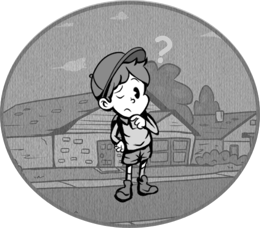
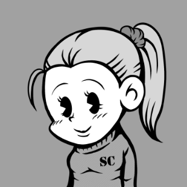
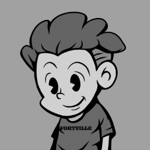
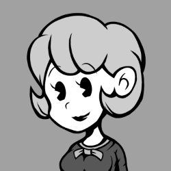

The main character of the story, who likes games, comics, and mystery novels.
He formed the Secret Club with his friends to find out the truth behind the incidents and mysteries that happen in town.
A kind of leader of the club.
WONDER SECRET CLUB
STORY..
Fortville, Illinois.
A boy, Will and his friends live in a rural town.
Their town is full of mysterious incidents and mysteries.
Will and his unique friends solve the mysteries that happen in their town.

WONDER SECRET CLUB MEMBERS

WILL
AGE : 8

CARL
AGE : 8
He is a knowledgeable and clever boy who is good at studying.
He is active in the Secret Club with his knowledge.
He supports Will.
He is active in the Secret Club with his knowledge.
He supports Will.
RICK
AGE : 8
He is a mischievous and quarrelsome boy, but he puts his friends first.
He has a strong sense of justice and helps Will and his friends when they are being bullied.
However, he often gets into fights and is often scolded by his teachers.
He has a strong sense of justice and helps Will and his friends when they are being bullied.
However, he often gets into fights and is often scolded by his teachers.

FINN
AGE : 8
A timid but kind-hearted boy with a hearty appetite.
He always wears a helmet because Rick often hits him on the head.
He always wears a helmet because Rick often hits him on the head.

LISA
AGE : 8
A girl who is Will's childhood friend.
She has a strong personality and is like an older sister.
She treats Will and the other boy members as children.
She has a strong personality and is like an older sister.
She treats Will and the other boy members as children.
OTHER FRIENDS

MARCUS
AGE : 8
An informant who is well versed in the happenings and gossip of the town.
He gives useful information to the members of the Secret Club.
He is always wandering around the town, so it is difficult to find him.
He gives useful information to the members of the Secret Club.
He is always wandering around the town, so it is difficult to find him.

MS,BETTY
AGE : 26
She is the class teacher at Fortville elementary school, where "Will" and his classmates attend.
She is a little goofy, but very beautiful, kind and popular.
She is a little goofy, but very beautiful, kind and popular.

GORDON
AGE : 48
He is the chief of the Fortville Police Station.
Strict with children, but when push comes to shove, he is dependable.
He often skips work to watch live sports with the townspeople.
Strict with children, but when push comes to shove, he is dependable.
He often skips work to watch live sports with the townspeople.

???
AGE : ??
WOOF! WOOF!!
©2022 WONDER SECRET CLUB.
All Rights Reserved.
All Rights Reserved.